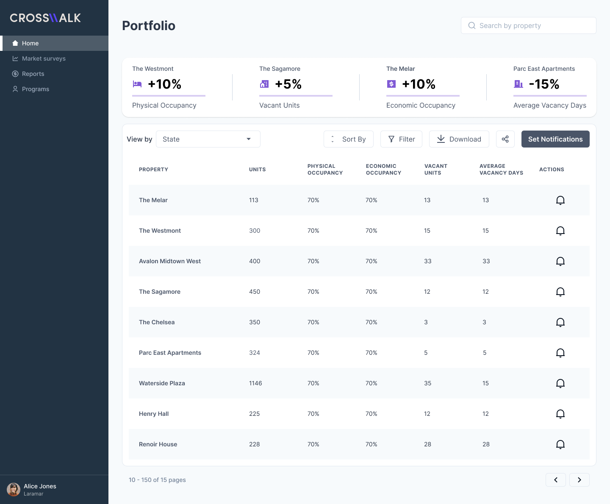
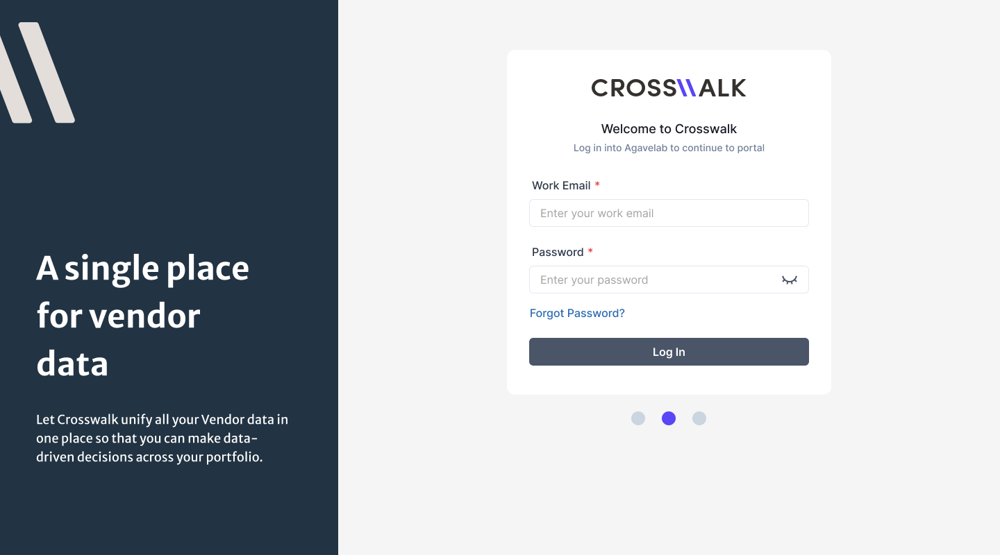

Crosswalk
Designing a market intelligence platform that helps commercial real estate teams turn complex property and market data into actionable insights.
Product Designer
B2B SaaS Platform
Commercial Real Estate
End-to-End Product Design
01
The Challenge
Commercial real estate teams work with large amounts of property, market, and vendor data across fragmented sources. Crosswalk needed to bring that information together in a way that made complex data easier to understand, compare, and act on.

02
My Role
As Product Designer, I worked across the end-to-end product experience, translating business requirements and complex real estate workflows into clear interfaces and reusable interaction patterns.
03
Key Product Areas
Home
Portfolio-level visibility into property performance, occupancy, vacancy, and operational signals.
Market Surveys
Tools for comparing properties and understanding market conditions across locations.
Create Market Survey
A guided workflow for building structured market comparisons from complex property data.
Portfolio
Centralized visibility across properties, metrics, notifications, and reporting.

04
Outcome
The resulting experience consolidated complex commercial real estate information into a more structured and approachable product, supporting faster navigation, comparison, and decision-making across portfolio workflows.